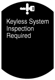
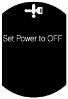
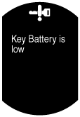

ระบบกุญแจรีโมท
id091400109400
รายละเอียด
• ระบบกุญแจรีโมทมีการนำมาใช้เพื่อทำการล็อค/ปลดล็อคโดยการทำงานของปุ่มตัวส่งสัญญาณรีโมท แม้ว่าจะอยู่ในตำแหน่งที่ห่างจากด้านหน้ารถ
การทำงาน
• เมื่อดำเนินการทำงานต่อไปนี้ ชุดเปิด/ปิดการทำงานจะตรวจสอบข้อมูล ID ของตัวส่งสัญญาณรีโมท
-
― การล็อค/ปลดล็อคโดยใช้ตัวส่งสัญญาณรีโมท
• ระบบกุญแจรีโมทจะมีฟังก์ชั่นต่อไปนี้ในกรณีที่ผู้ใช้สั่งการระบบไม่ถูกต้อง หรือเพื่อป้องกันไม่ให้ผู้ใช้ออกจากรถโดยไม่ได้ล็อครถ
-
― ฟังก์ชั่นการล็อคซ้ำอัตโนมัติ: หลังจากการปลดล็อค หากประตูบานใดบานหนึ่งหรือประตูท้ายไม่ถูกเปิด และผ่านระยะเวลาตามที่ตั้งค่าไว้ ประตูทุกบานจะถูกล็อคโดยอัตโนมัติ
― ฟังก์ชั่นหยุดการทำงานตัวส่งสัญญาณรีโมท: ฟังก์ชั่นทั้งหมดของตัวส่งสัญญาณรีโมทยกเว้นตัวส่งสัญญาณรีโมทที่ใช้สำหรับล็อคประตูจะถูกหยุดชั่วคราว
― ฟังก์ชั่นการแจ้งเตือน: หากระบบทำงานไม่ถูกต้องซึ่งอาจทำให้เกิดปัญหาขึ้น ระบบจะเตือนผู้ใช้โดยการใช้ไฟแสดงสถานะ ไฟเตือน หน้าจอ LCD และเสียงเตือนในแผงหน้าปัด
ฟังก์ชั่นแสดงสถานะแรงดันไฟแบตเตอรี่ตัวส่งสัญญาณรีโมทต่ำ
-
• ฟังก์ชั่นนี้จะแจ้งกับผู้ใช้ว่าแรงดันไฟแบตเตอรี่ของตัวส่งสัญญาณรีโมทต่ำ
ภาพโครงสร้าง
ผังวงจรระบบ
การทำงาน
ล็อค/ปลดล็อคโดยใช้ตัวส่งสัญญาณรีโมท
-
หมายเหตุ
-
• หากปุ่มล็อคของตัวส่งสัญญาณรีโมทถูกใช้งานเมื่อตรวจพบสภาวะต่อไปนี้ทั้งหมด ประตูทุกบานและประตูท้ายจะถูกล็อค
-
― สวิตช์สตาร์ทอยู่ที่ OFF (LOCK)
― ประตูรถทุกบานปิดอยู่
• หากปุ่มปลดล็อคของตัวส่งสัญญาณรีโมทถูกใช้งานเมื่อตรวจพบสภาวะต่อไปนี้ทั้งหมด ประตูทุกบานและประตูท้ายจะถูกปลดล็อค
-
― สวิตช์สตาร์ทอยู่ที่ OFF (LOCK)
1. เมื่อปุ่มล็อคหรือปลดล็อคของตัวส่งสัญญาณถูกกด ตัวส่งสัญญาณรีโมทจะส่งข้อมูล ID
2. เมื่อตัวรับญญาณกุญแจรีโมทได้รับข้อมูล ID และส่งข้อมูลไปยังชุดเปิด/ปิดการทำงาน
3. ชุดเปิด/ปิดการทำงานจะตรวจสอบข้อมูล ID และหากข้อมูล ID ตรงกัน จะส่งสัญญาณขอการล็อค/ปลดล็อคไปยังโมดูลควบคุมตัวถังด้านหลัง (RBCM)
4. โมดูลควบคุมตัวถังด้านหลัง (RBCM) จะสั่งการมอเตอร์แอ็คชิวเอเตอร์ล็อคประตูหน้า/หลังเพื่อล็อค/ปลดล็อคประตูหน้า/หลัง
5. ในช่วงเวลาเดียวกับการล็อค/ปลดล็อคประตู จะส่งสัญญาณขอการกะพริบไฟฉุกเฉินไปยังแผงหน้าปัดเป็นสัญญาณระบบ CAN
6. แผงหน้าปัดจะส่งสัญญาณขอการกะพริบไฟฉุกเฉินไปยังโมดูลควบคุมตัวถังด้านหน้า (FBCM) เป็นสัญญาณระบบ CAN
7. โมดูลควบคุมตัวถังด้านหน้า (FBCM) จะควบคุมการกะพริบของไฟฉุกเฉินให้มีจำนวนครั้งดังต่อไปนี้เพื่อแจ้งว่าการล็อค/ปลดล็อคเสร็จสมบูรณ์
-
• Lock: กะพริบหนึ่งครั้ง
• Unlock: กะพริบสองครั้ง
การทำงานของฟังก์ชั่นการล็อคซ้ำอัตโนมัติ
-
• หลังจากชุดเปิด/ปิดการทำงานส่งสัญญาณขอปลดล็อคไปยังโมดูลควบคุมตัวถังด้านหลัง (RBCM) หากการสั่งการต่อไปนี้ไม่ถูกดำเนินการภายใน 30 วินาที*1 ระบบจะส่งสัญญาณขอการล็อคไปยังโมดูลควบคุมตัวถังด้านหลัง (RBCM) เพื่อล็อคประตูหน้า/หลัง
-
― ประตูหรือประตูท้ายถูกเปิด
― การล็อค/ปลดล็อคถูกดำเนินการโดยใช้เบ้าเสียบกุญแจประตูหน้าด้านคนขับ
― การล็อค/ปลดล็อคถูกดำเนินการโดยใช้ปุ่มล็อคประตูหน้าด้านคนขับ
― การล็อค/ปลดล็อคถูกดำเนินการโดยใช้ตัวส่งสัญญาณรีโมท
― สวิตช์สตาร์ทอยู่ที่ ACC หรือ ON (เครื่องยนต์ไม่ทำงาน)
*1 :การกำหนดการตั้งค่าเวลาเอง
การทำงานของฟังก์ชั่นหยุดการทำงานตัวส่งสัญญาณรีโมทชั่วคราว
-
เมื่อดำเนินการล็อคประตู
-
• หากประตูถูกล็อคโดยการใช้ตัวส่งสัญญาณรีโมทเมื่อตรวจพบสภาวะทั้งหมดต่อไปนี้ ฟังก์ชั่นทั้งหมดของตัวส่งสัญญาณรีโมทยกเว้นตัวส่งสัญญาณรีโมทที่ใช้สำหรับการล็อคประตูจะถูกหยุดชั่วคราว
-
― ประตูรถทุกบานและประตูท้ายถูกปิด
― สวิตช์สตาร์ทอยู่ที่ OFF (LOCK)
-
การยกเลิกการหยุดทำงานตัวส่งสัญญาณรีโมทชั่วคราว
-
• ฟังก์ชั่นของตัวส่งสัญญาณรีโมทที่ถูกหยุดการทำงานชั่วคราวจะกลับมาทำงานเมื่อตรวจพบสภาวะต่อไปนี้:
-
― ตัวส่งสัญญาณรีโมทที่สามารถสตาร์ทเครื่องยนต์ถูกนำไปไว้ด้านในรถ
― ปุ่มล็อค/ปลดล็อคบนตัวส่งสัญญาณรีโมทที่ถูกหยุดการทำงานชั่วคราวถูกกด
การทำงานของฟังก์ชั่นการแจ้งเตือน
-
• ในสภาวะต่อไปนี้ ชุดเปิด/ปิดการทำงานจะส่งสัญญาณขอการแจ้งเตือนไปยังแผงหน้าปัดผ่านระบบ CAN เพื่อให้ไฟแสดงสถานะปุ่มกดสตาร์ท (สีเหลือง) ติดสว่าง
• เมื่อแผงหน้าปัดได้รับสัญญาณขอการแจ้งเตือน ระบบจะแสดงสถานะการเตือนในหน้าจอ TFT LCD (รุ่นที่มีหน้าจอ TFT LCD) หรือจะกะพริบไฟเตือนกุญแจ (รุ่นที่ไม่มีหน้าจอ TFT LCD)
|
สภาวะ
|
แผงหน้าปัด
|
ปุ่มกดสตาร์ท
|
|
เสียงเตือนกุญแจรีโมท
|
ไฟเตือนกุญแจ (สีแดง)
|
หน้าจอ TFT LCD
|
ไฟแสดงสถานะ (สีเหลือง)
|
|
ระบบกุญแจรีโมทบกพร่อง
|
―
|
ON
|
 |
กะพริบ
|
|
ประตูด้านคนขับถูกเปิดขณะสวิตช์สตาร์ทอยู่ที่ตำแหน่ง ACC
|
สเปคยุโรป (ประเทศอังกฤษ L.H.D.)
• รูปแบบ A*1×6 ครั้ง
รุ่นที่ไม่ใช่สเปคยุโรป (ประเทศอังกฤษ L.H.D.)
• รูปแบบ A*1×ต่อเนื่อง
|
―
|
 |
―
|
|
ตรวจไม่พบตัวส่งสัญญาณรีโมทภายในรถเมื่อประตูทุกบานถูกปิดขณะสวิตช์สตาร์ทไม่อยู่ที่ Off (LOCK)
|
รูปแบบ B*1
|
กะพริบ
|
|
―
|
*1 :สำหรับรูปแบบเสียงของเสียงเตือนกุญแจรีโมท โปรดดูที่เสียงเตือนกุญแจรีโมท (ดูที่
เสียงเตือนกุญแจรีโมท)
การทำงานของฟังก์ชั่นแสดงสถานะแรงดันไฟแบตเตอรี่ตัวส่งสัญญาณรีโมทต่ำ
-
• เมื่อบิดสวิตช์สตาร์ทจากตำแหน่ง ON (เครื่องยนต์ทำงานหรือไม่ทำงาน) ไปที่ Off (LOCK) ในสภาวะที่แสดงไว้ในตาราง ชุดเปิด/ปิดการทำงานจะส่งสัญญาณขอไฟแสดงสถานะแรงดันไฟแบตเตอรี่ต่ำในแผงหน้าปัดเป็นสัญญาณระบบ CAN
• เมื่อแผงหน้าปัดได้รับสัญญาณขอการทำงานเพื่อแสดงการไม่มีแรงดันไฟแบตเตอรี่ ระบบจะแสดงแรงดันไฟแบตเตอรี่ตัวส่งสัญญาณรีโมทต่ำในหน้าจอ TFT LCD (รุ่นที่มีหน้าจอ TFT LCD) หรือจะกะพริบไฟแสดงสถานะกุญแจ (รุ่นที่ไม่มีหน้าจอ TFT LCD)
|
สภาวะ
|
แผงหน้าปัด
|
|
ไฟแสดงสถานะกุญแจ (สีเขียว)
|
การแสดงสถานะบน LCD
|
|
ชุดเปิด/ปิดการทำงานจะได้รับรหัสสำหรับแรงดันไฟแบตเตอรี่ตัวส่งสัญญาณรีโมทต่ำ
|
กะพริบ (เป็นเวลาประมาณ 30 วินาทีหลังจากสวิตช์สตาร์ทอยู่ที่ Off)
|
 |